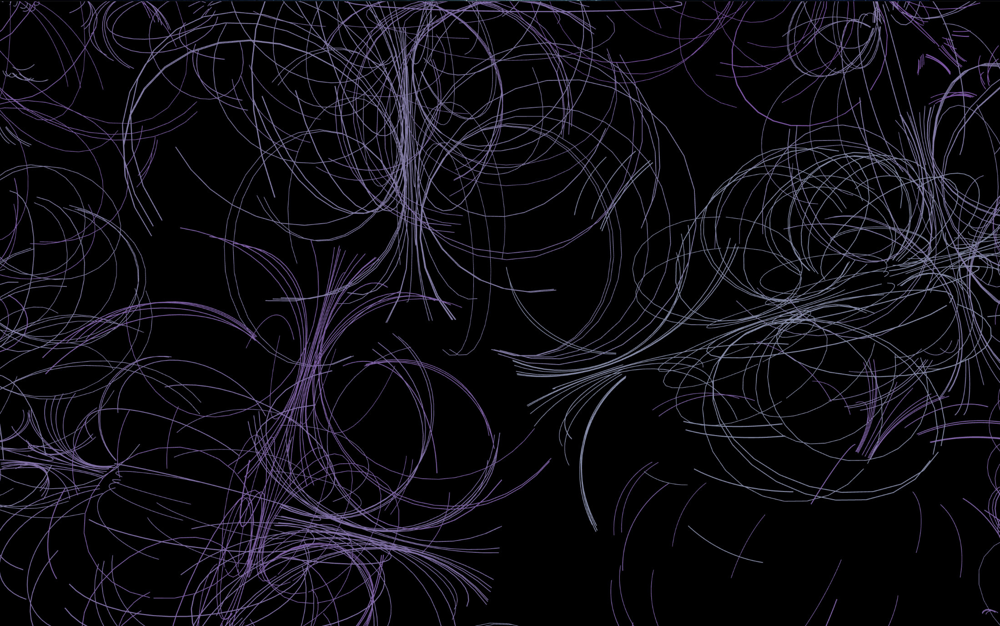

For this project, I aimed to create an illusion where things keep moving and everyone can play along. This project is all about making it look like broken lines are always shifting in the background. When you move your mouse, circles will follow your every move, making it fun to interact with. But the fun part is that the screen clears often, so the marks do not stick around for long. This is where everything keeps changing, leaving just quick memories on your screen.

When I started this project, I dove into JavaScript tutorials to get the hang of it, and I practiced using p5.js based on what I learned.
However, I hit a roadblock when I realized that the interactions only worked on Live Server and not on my local device.
I spent a significant amount of time learning how to create the animations, but I ran out of time to fix the issue of publishing it successfully to my local device.
Regarding the design, given more time, I would have tweaked the background colors to shift gradually over time and ensured that the project was accessible through my own website.